WotLK Warmane Icecrown - Power Leveling 1 to 80 (no boost)
Level a new character from 1 to 80 with dungeon runs and an alt, step by step.
Requirements
Reset Timer
How to Power Level from 1 to 80
Alliance Start
| Level | Method |
|---|---|
| 1-15 | Get a high level Thorns buff from a level 80 Druid and level through quests in your starting zone. 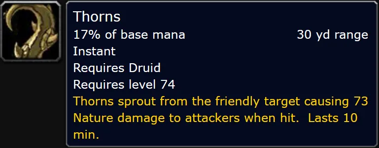 |
| 15-28 | Stormwind - The Stockades : Once you hit level 15 go to Stormwind - The Stockades or ask for a summon. 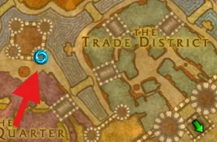 Bring your alt and your main character, enter the dungeon, leave your alt at the entrance and clean the dungeons until you reach level 22. Then go out and take the quest Quell The Uprising outside the dungeon. Repeat a few runs, don’t forget to return the quests. Until you reach level 28. |
| 28-40 | Tirisfal Glades - Scarlet Monastery : Take the quest Mythology of the Titans or share it with your alt in Ironforge - Hall of Explorers at level 28 (optional) then go to Tirisfal Glades located north of Eastern Kingdom. It will be a long walk from Ironforge. Death Knights can return to Acherus: The Ebon Hold and travel from Eastern Plaguelands to Tirisfal Glades, this route is much faster than starting in Ironforge. While traveling there, you can pick up a fly path in Western Plaguelands. You will need another person to summon your alt using the Summon Stone located outside the dungeon. If you are lucky, you can find some people to help you summon once you arrive, otherwise you’ll have to bring another alt with 100% mount or ask a friend to come along. To start your power leveling, enter inside the castle, you will find 4 entrances. Take the right one, it will lead you to The Library. Start clearing the dungeon and make sure your alt is close enough to receive the xp but not too close to get it diminished. After you kill the boss, make sure to grab the key in the box behind him, it will be our ticket to enter the second dungeon. Now leave the dungeon and go back to the entrance room, you will find 2 doors that require a key to open, choose the left door and enter the dungeon first with your main, kill the enemy that’s in front when you arrive, then bring your alt. If you have done it correctly, you should be at the Cathedral dungeon. Same process as before, you can aggro the boss to instantly aggro the whole room after you open the cathedral’s door just be careful, pull too much and these adds can kill you. Repeat until you reach level 40. Don’t forget to return the quest if you decided to take it. 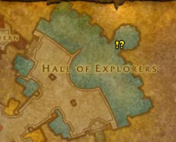 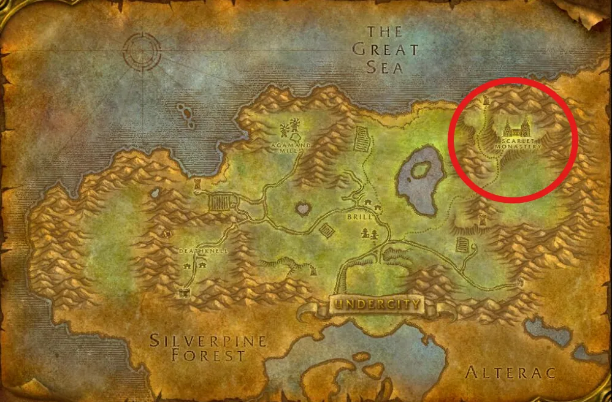 |
| 40-58 | Tarnaris - Zul'Farrak : Make sure you have at least 64 gold (or more if you plan to leave a tip when you ask for a Dalaran portal) on your alt. Now go to your respective race capital, learn Apprentice and Journeyman Riding, get yourself a mount. Then ask for a portal to Dalaran. When you arrive there, set your Hearthstone in your favorite inn and head to the big mage tower called “The Violet Citadel” in the west. Climb up the stairs and take the portal on your left, it will take you to the “Cavern of Time” in Tarnaris. 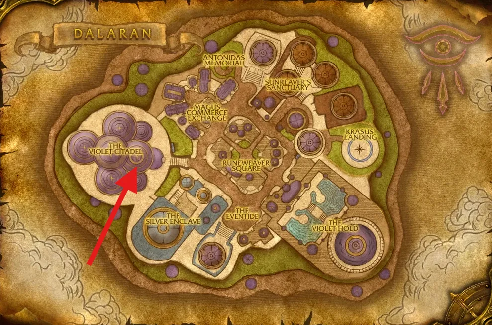 From there, both of your main and alt should be at the entrance of the cavern, set your main to follow your alt while on his new mount and head to Gadgetzan and take these quests : Divino-matic Rod, Troll Temper and Scarab Shells or share it with your alt at level 40 then enter Zul'Farrak (in Tanaris north-west). 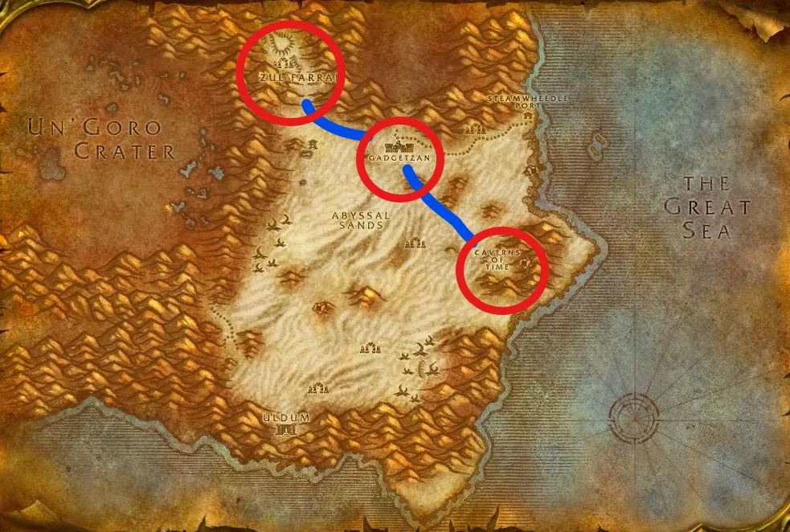 In this dungeon, you can mount up inside, but be careful, “Sandfury Shadowhunter” can dismount you if you get too close to them. If you have a Druid as your main, you can use Travel Form inside this dungeon and aggro the adds. Take your time on this one, leave you alt in the entrance then to the center of the dungeon as shown below. 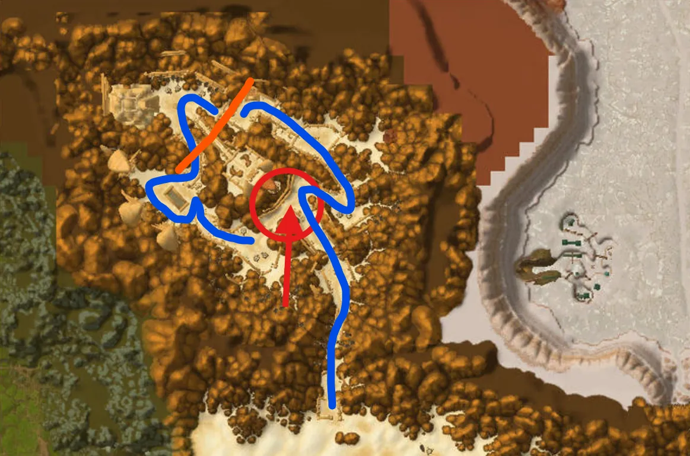 The red circle is where your alt will be standing, make sure you clear all the adds around and check for patrols. The blue line is the recommended path for your main. In most cases if you kill adds past the orange line, your alt won’t receive the experience. If you know this is your last run before you hit “You've entered too many instances recently”, take the time to do the event (the long stairs north-west in Zul'Farrak where people are caged, kill the executioner, take the key and free them, talk to Sergeant Bly and it will start the event. It takes a really long time to finish) then get Divino-matic Rod from Sergeant Bly and complete the other quests you took. When you are close to level 58, return the quests, you should hit level 58. |
58-65 (57-65) if you get summoned |
Hellfire Peninsula : Hellfire Ramparts Now it’s time to head to the Outland. The easiest way to get there is to ask someone to help you summon your alt using the Summon Stone beside Hellfire Ramparts. Otherwise, use your Hearthstone and go to any major
city and take the portal to Blasted Lands, it will
teleport you near The Dark Portal. Now you need to travel to Hellfire Ramparts located in Hellfire Citadel, the middle of Hellfire Peninsula. 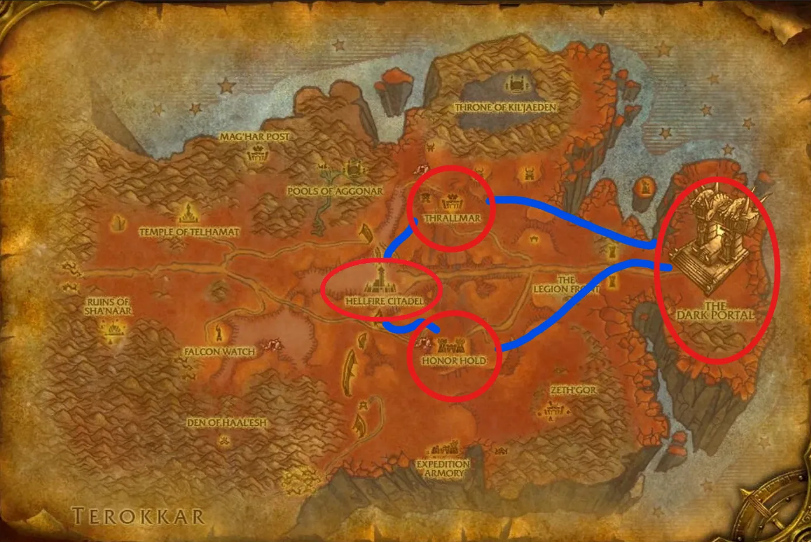 Once you enter, you’re going to leave your alt at the entrance and start clearing the adds along the blue line, you will find a boss along the way, try to skip it. Then you will climb up the stairs and continue on the green line, you will find an open space where one of the walls is open up and can lead you to the entrance by jumping down. Clear the adds in this area then jump down and reset. 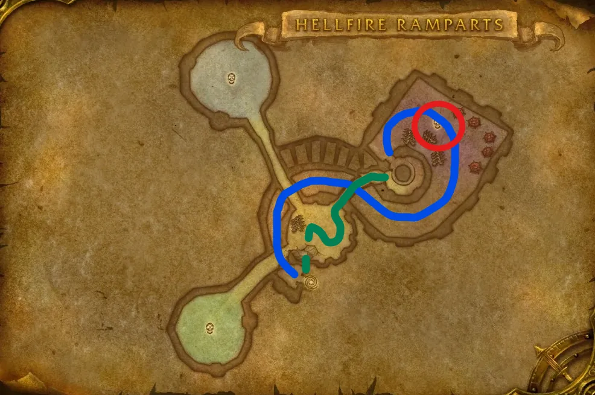 |
| 65-72 | Howling Fjord : Utgarde Keep Now it’s time to head to Northrend, just like in Outland. The easiest way to get there is to ask someone to help you summon your alt using the Summon Stone beside The Utgarde Keep. Or take the boat in Menethil Harbor to Howling Fjord and walk up to the entrance 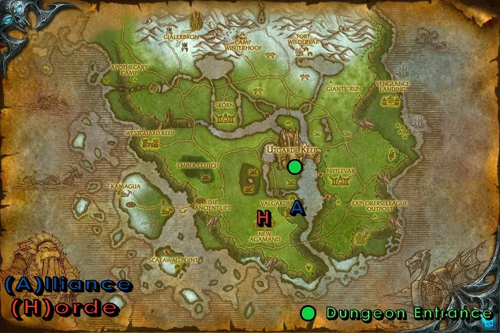 Here you’re going to leave your alt at the entrance and run this path with your main : 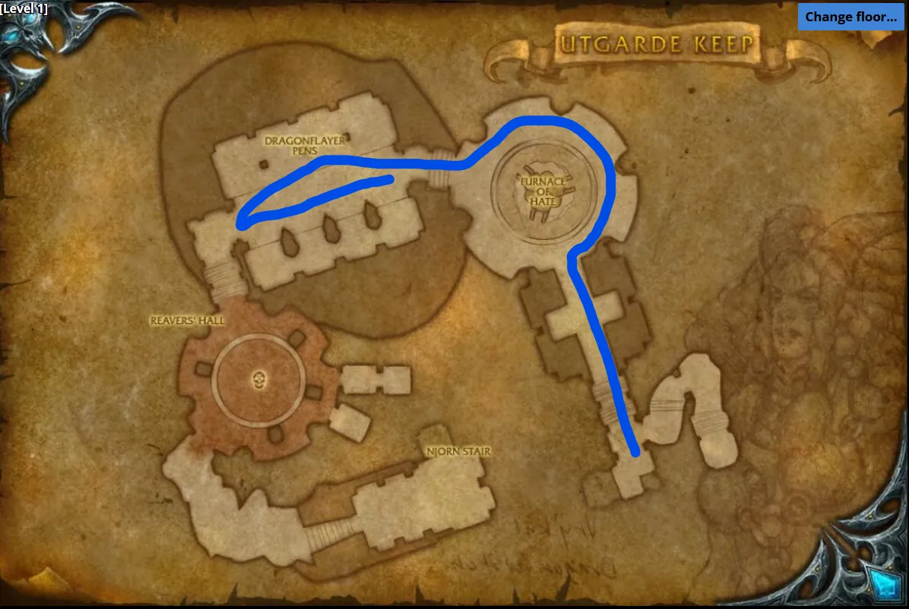 These adds are all melees, so if you can kite them, try so. At level 68, you can leave the instance and take these quest from Defender Mordun (Alliance) or Dark Ranger Marrah (Horde) : Disarmament and Into Utgarde! Optional Horde only : A Score to Settle (located in Vengeance Landing) If you know this is your last run before you hit “You've entered too many instances recently”, then complete all the dungeon and get Ingvar's Head (last boss) Once you’re close to hit level 72, return the quests. |
| 72-80 | The Storm Peaks : Halls of Stone Now for the final stretch… Although things got more complicated. The easiest way to get there is to ask someone to help you summon your alt using the Summon Stone beside Ulduar. Or learn Cold Weather Flying through Tome of Cold Weather Flying from another level 80 alt of the same account then learn flying and buy a flying mount. If none of these options are available to you, then you have to level up until you reach level 77. Only then you can go to K3 in The Storm Peaks and get Loaned Gryphon Reins from Honest Max. 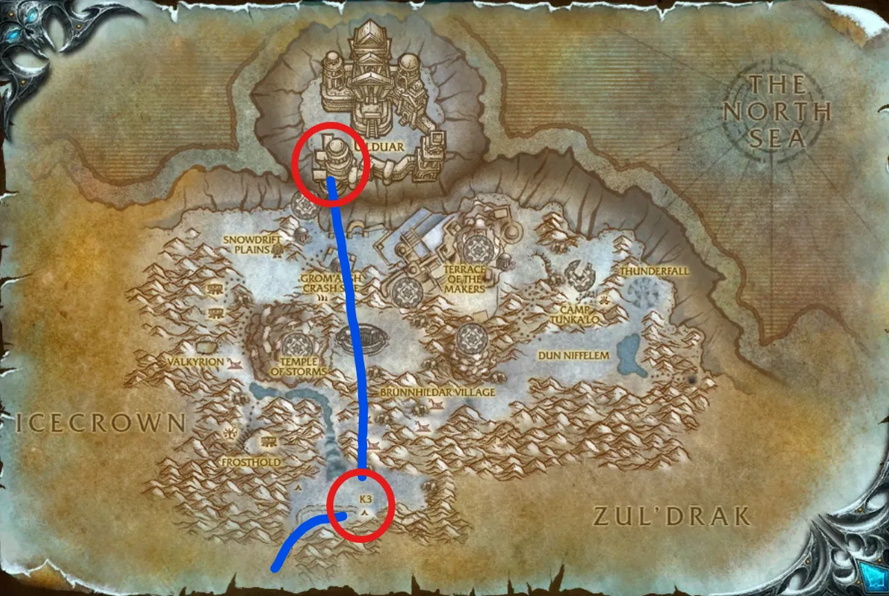 Once you enter the instance, leave your alt at the entrance and follow the blue line until you reach the Stone Boss. After you clear all the adds before the boss, aggro the boss then jump down from the crack behind him (green line). Let him follow you while you’re leaving the dungeon. 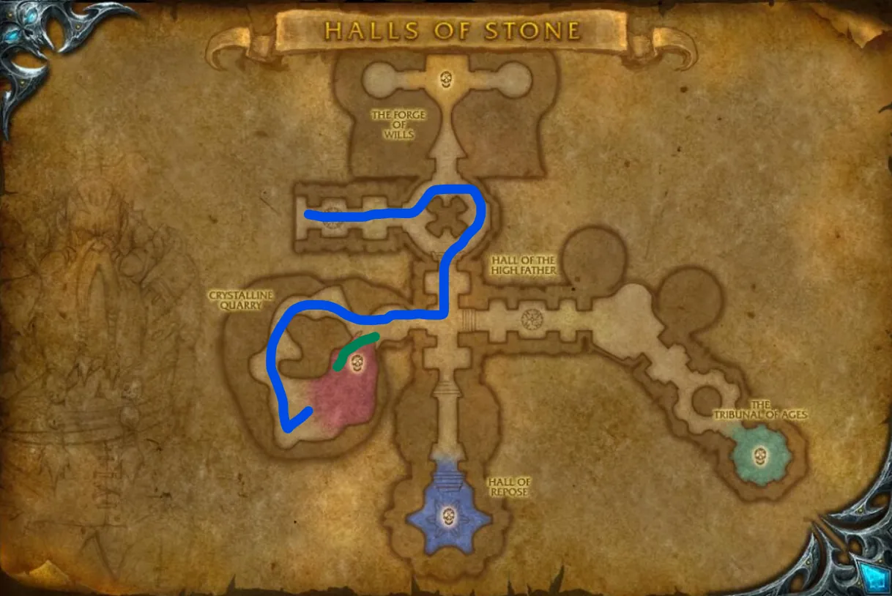 |
Source and Useful Links
https://static.icy-veins.com/images/wotlk/dungeons/utgarde-keep-entrance.jpg

https://wowwiki-archive.fandom.com/wiki/Mob_difficulty_colors